Poems
Here Is Vĩ Dạ Hamlet
Hàn Mặc Tử
Why don’t you come back and visit Vĩ village?
See the sunlight on the rows of areca palms, the newly risen sun.
Whose garden is so lush, so green like jade?
Bamboo leaves partly veil a square-shaped face.The wind follows the wind’s way, the clouds the clouds’ road.
The river lies sorrowful; the corn blossoms sway.
Whose boat is moored there at the moonlit riverbank?
Can it carry the moon back in time tonight?I dream of a traveler far away, a traveler far away.
Your clothes are so white I can no longer make you out…
Here, mist and smoke blur every human figure.
Who can know whose love is deep and true?
Golden Moon, Jade Moon
Hàn Mặc Tử
Moon! Moon! Moon! It is the Moon—Moon, Moon!
Who will buy the moon? I’ll sell the moon to you.
But I will not sell reunion, nor lovers’ promises…
Once you have won first place and returned home in glory,
Come back to me—I’ll give you your change in lines of poetry.No, no, no! I will not sell the Moon’s soul.
I was only pretending—you actually believed me?
If you thought I meant it, how foolish you are:
A Golden Moon, a Jade Moon—how could such a thing be sold?Moon! Moon! Moon! It is the Moon—Moon, Moon!
The moon shines, the moon shines everywhere.
I am praying for my moon.
For the moon I finger a string of prayer beads,
So that the Moon may become a Moon of Radiance.Moon! Moon! Moon! It is the Moon—Moon, Moon!
Song inspired by these poems
Let Go of the Moon
Phương Mỹ Chi
Verse 1
Oh moon, don’t follow one person forever
Oh moon, sit here and drink a glass of wine
Lean tilt get drunk tonight
I invite you to come play
Oh night, how many more nights of life are left?
After hundreds of years of dreaming, the poet has not yet run out of words
Give me a wonderful poem
Why do you accept the invitation without hesitation?Chorus
Let the moon follow your steps home
Let the dream of the lovebirds tilt so much
The side of our boat gathers the golden moonlight
The one who carries the moonlight pours away
Ha i da i da i da i
Ha i da i da i da a
Ha i da i da i da i
Whoever buys the moon I will sell the moon toVerse 2
Whoever buys the moon comes here
I leave the moon for those who want to get drunk
The moon doesn’t often visit
The cold moon makes me restless in my room
Why don’t you come visit
Whose garden is so smooth like pearls
That white shirt looming in the mist where to go tonight
Anchoring the moon floating on this riverbankChorus
Let the moon follow your steps home
For the dream of lovebirds to lean so much
Manh My boat collects the golden moonlight
The one who carries the moonlight away
Ha i da i da i da i
Ha i da i da i da i a
Ha i da i da i da i
Who buys the moon, I’ll sell the moon toVerse 3
Why don’t you go back and play in Vi village?
Look at the rising sun of the areca trees
Whose garden is so green, green like jade
Bamboo leaves cover the face of the field
Dreaming of guests from far away, guests from far away
Your shirt is so white I can’t see
Here it’s foggy and foggy
Who knows whose love is strong?Outro
Whoever buys the moon I will sell the moon to
Planning
Characters, important objects, symbols:
- areca palms
- jade
- bamboo
- wind
- clouds
- river
- corn blossoms
- boat
- moon, golden moon, jade moon
- a traveler
- white
Actions:
- “carrying” the moon
- mist swaying back and forth
- moon rising and setting
- moon following a boat as it traverses left to right
Analysis
- Hàn regularly addresses the moon directly as though it were a person capable of visiting him
- following him
- “someone might swallow the golden moonlight”
- Hàn’s desire to capture, drink, carry, or possess moonlight.
- he wants to be intoxicated by the moon
- Hàn’s poem contains the famous cry “Ai mua trăng tôi bán trăng cho” — roughly, “Who will buy the moon? I’ll sell the moon to you.”
- Hàn complains that the moon is “hững hờ” — indifferent — and that because of it he waits throughout the night.
Concept
- The moon moves in an arc shape; rising and setting
- The person on a boat moves horizontally, from left to right; following the moon
- (optional) The green mist clouds move horizontally, from left to right from different starting points
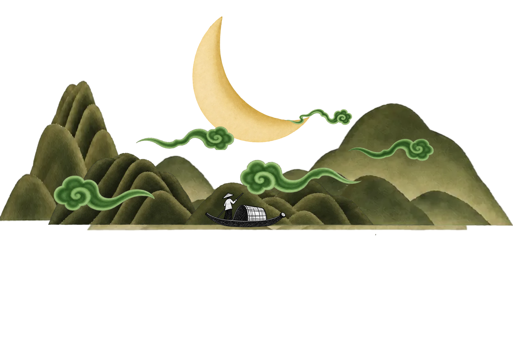
Materials
Box:
- solid wood, lacquered
- mahogany?
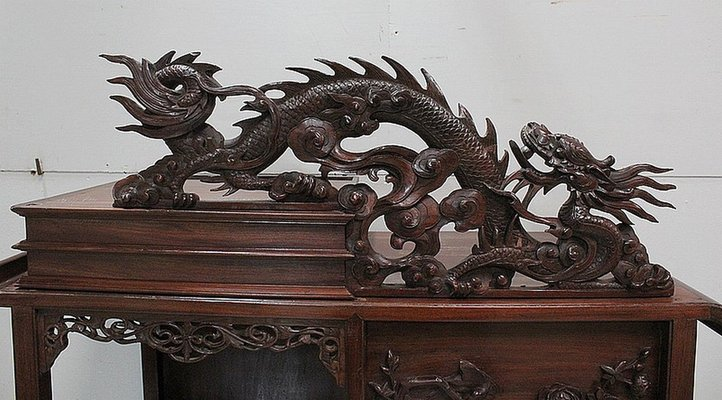
Mountains, moon, and mist:
- mahogany?
- laser-cut wood, painted and lacquered
Gears, moon: - 3D printed on silk green PLA
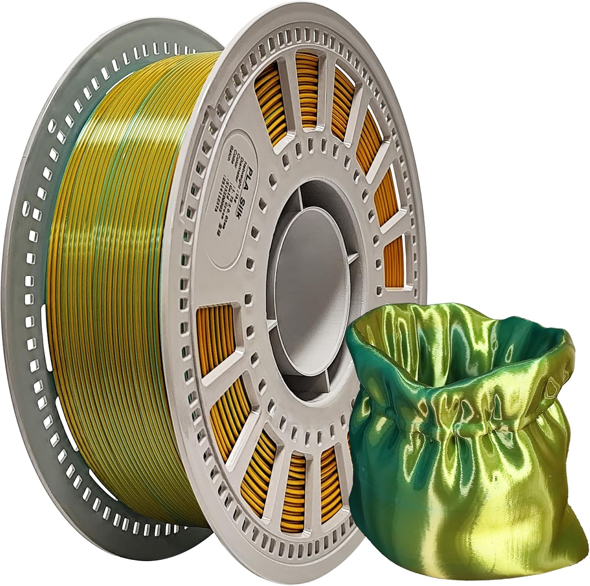
Shaft, crank:
- 3D printed on wood PLA
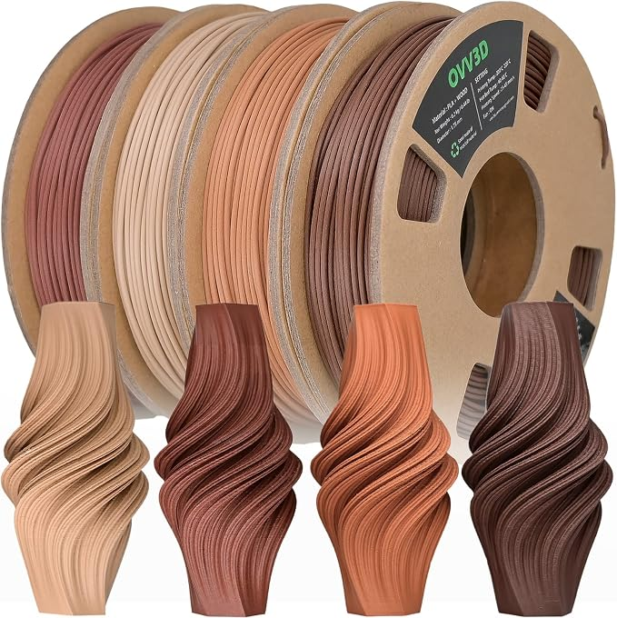
- Wooden dowels?
Mechanisms
- Crank
- Shaft
- Gear train
- Bevel gears to convert rotational to linear/lateral movements
- Spur gears
- Scotch-yoke slider
- Linkages for arc shape
Helpful video for converting rotational to linear motion
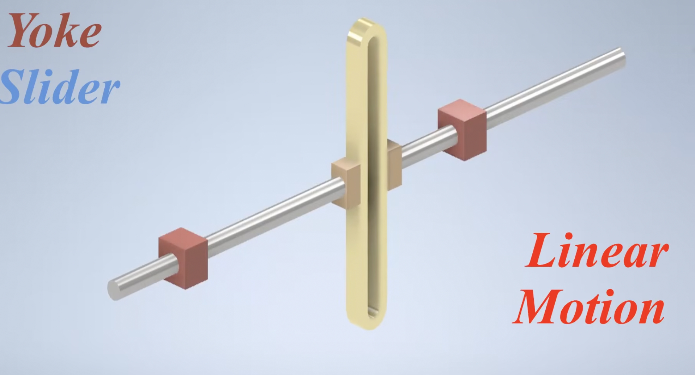
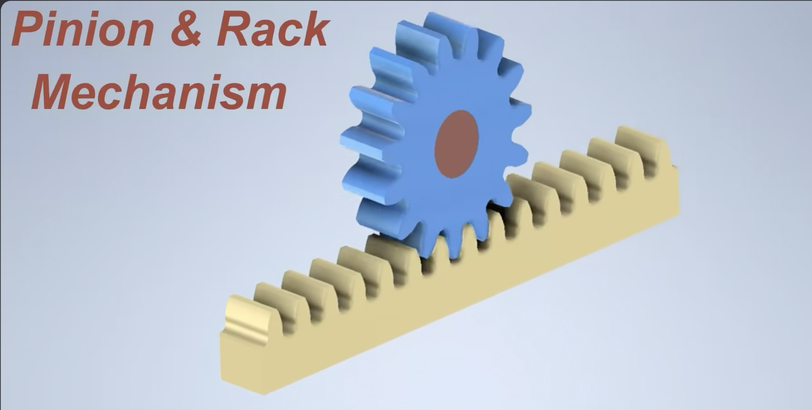
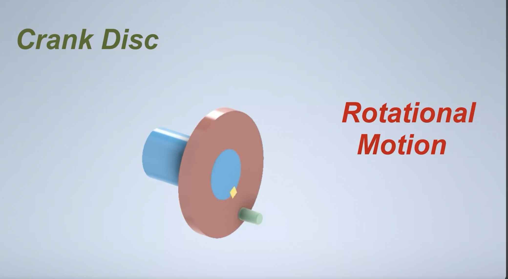
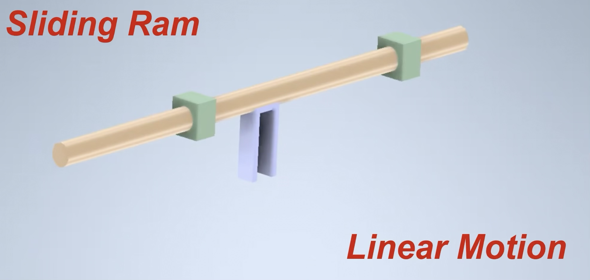
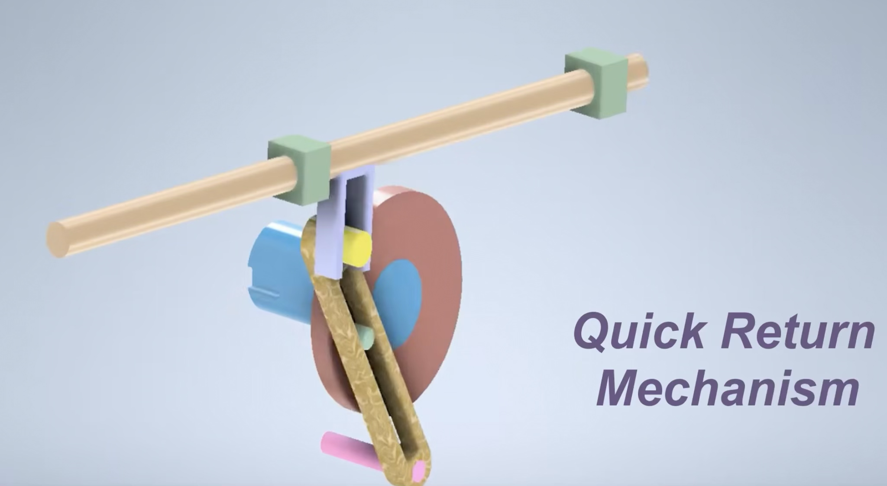
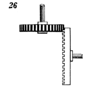
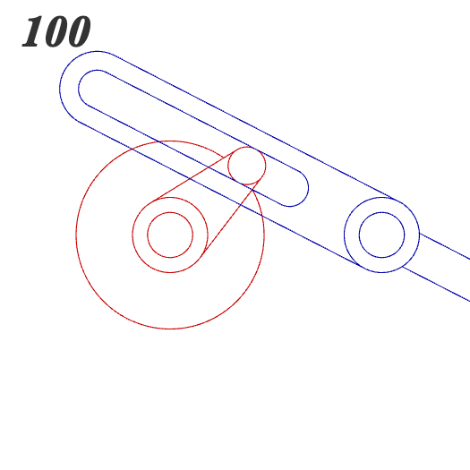
Rectilinear motion of horizontal bar, by means of vibrating slotted bar hung from the top.
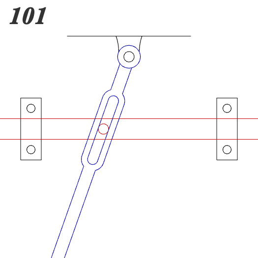
This but start with a bevel gear?
- arc movement
- instead of a circle, a gear whose rotation gets slowed down using a gear train
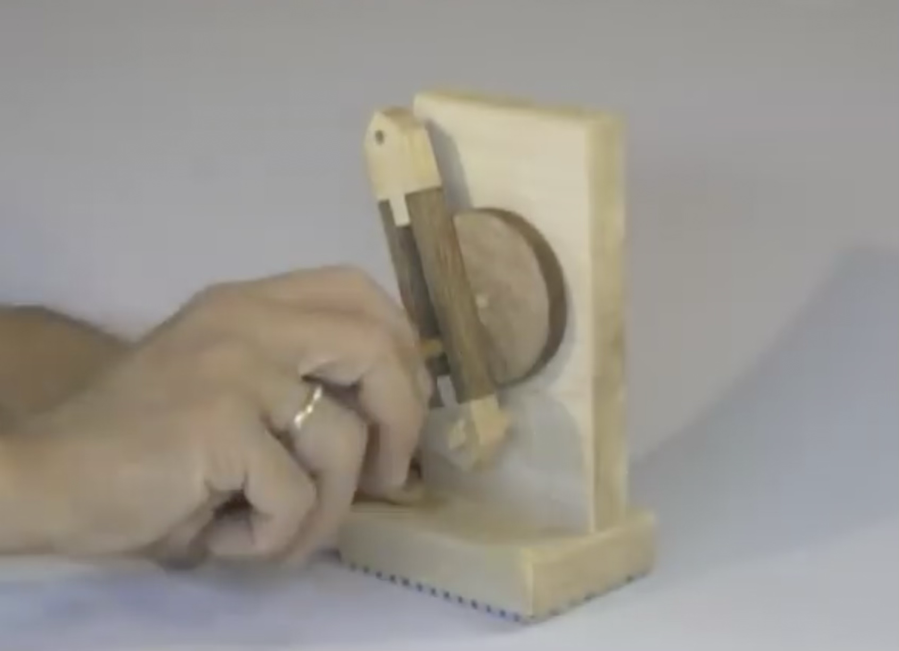
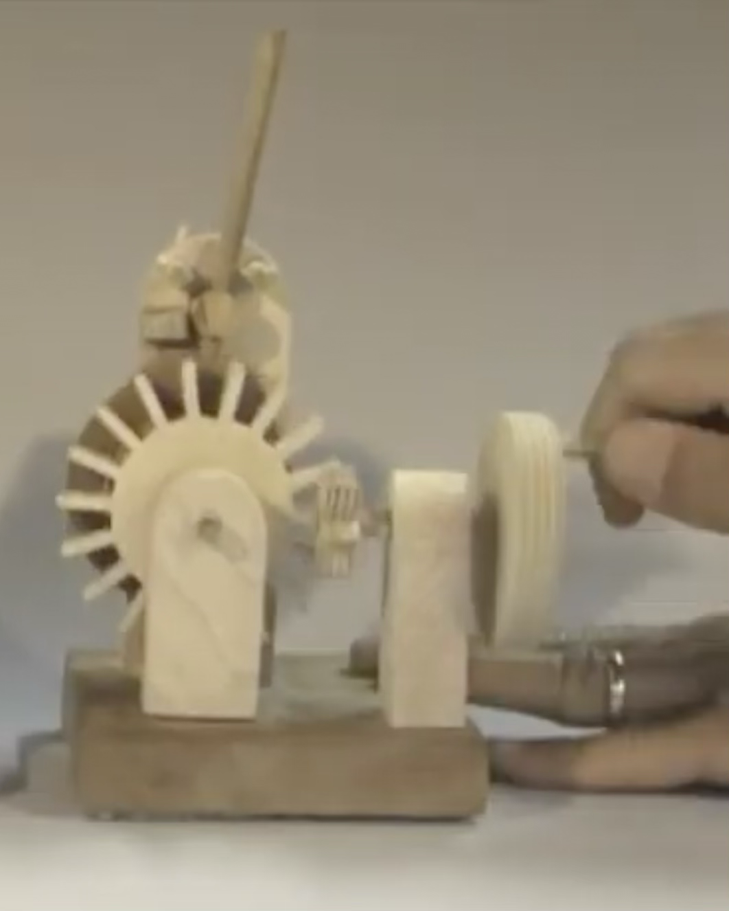
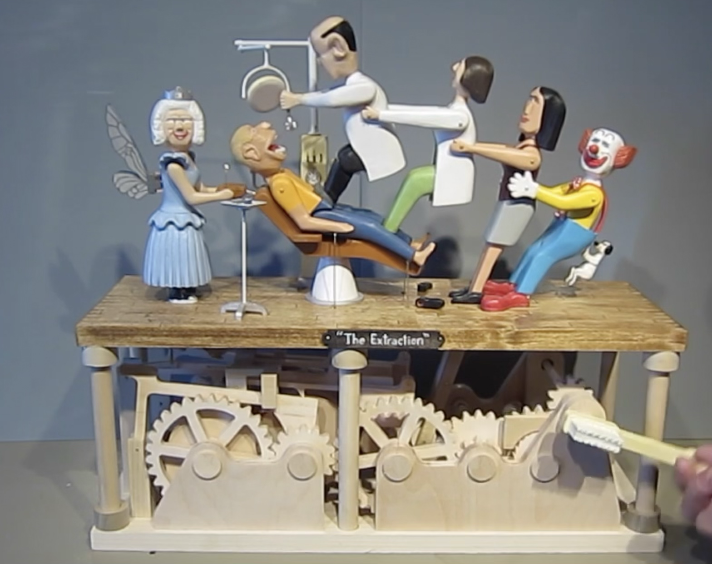
https://youtu.be/9QZCTirijGU?si=7-Notf8bmFDIQWFq&t=168
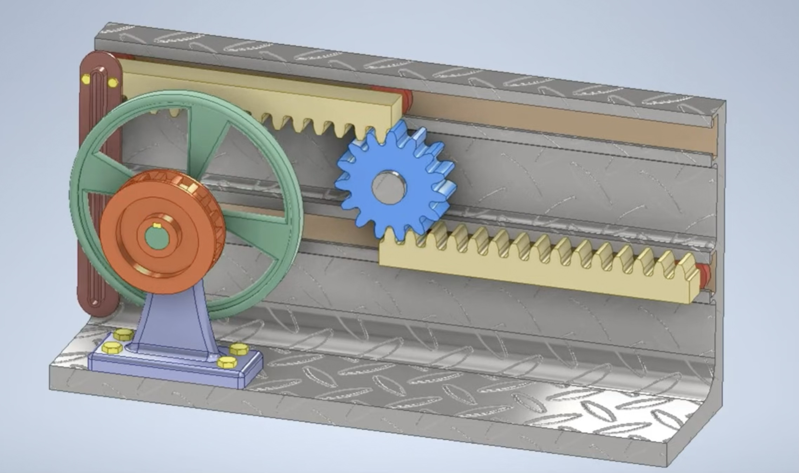
Fabrication plan
**September 29: Project Proposal due**
September 29-October 6: Prototyping
- CAD the mechanisms
- Gear train that converts rotational to linear/lateral movement
- Linkages for lateral movement
- 3D print the mechanisms using normal PLA
- Make a prototype box using cardboard
- Research lacquer techniques
- Go to office hours for help with mechanisms
**October 6: Prototype Review**
October 6-13: Iterating
- 3D print the mechanisms with final filament proper tolerances
- Make a nicer box using wood
- Make nice wood joints for the box
- Paint the laser cut pieces
**October 13: Progress Check-In**
October 13-20: Finalizing
- 3D print mechanisms with better tolerances and infill
- Lacquer the wood
- Finalize the project
- Documentation blog post
**October 20: Final Presentations**
Open questions
- What gears should I use?
- What wood should I use for the box?
- What are nice wood joints I can use for the box?
- What lacquer should I buy?
- Should the CAMs/gears be stuck to the shaft?